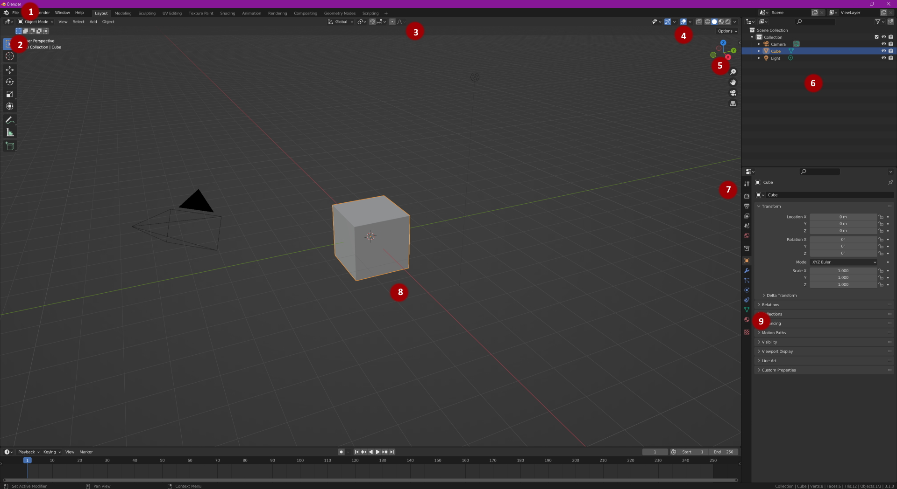
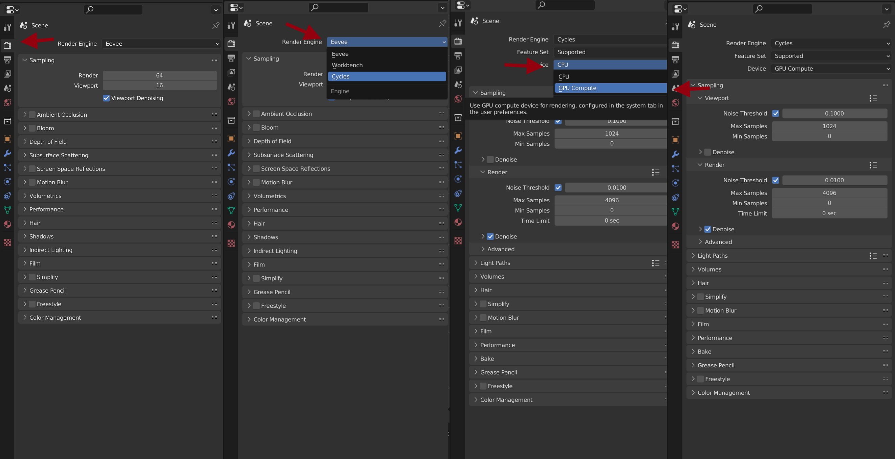
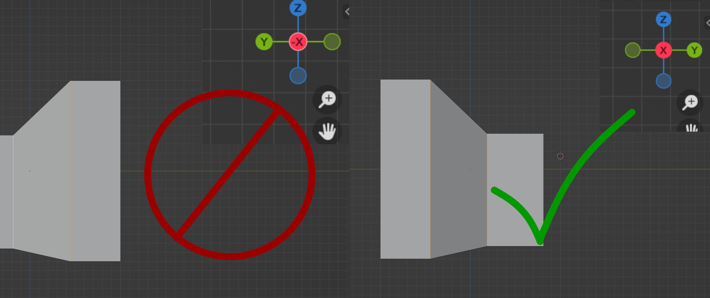
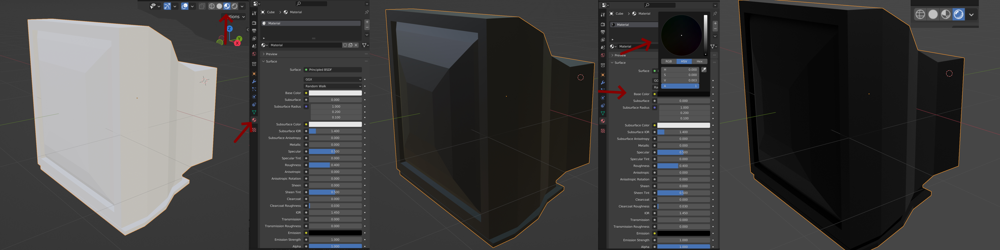
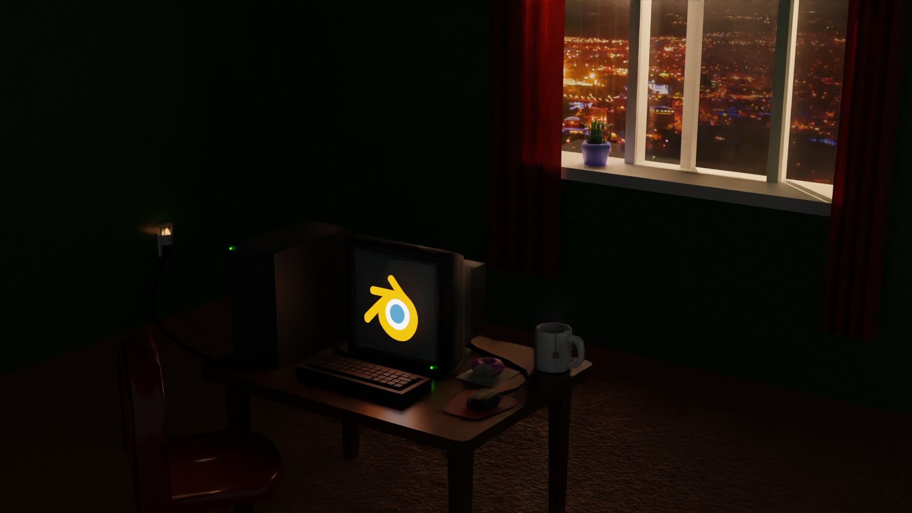
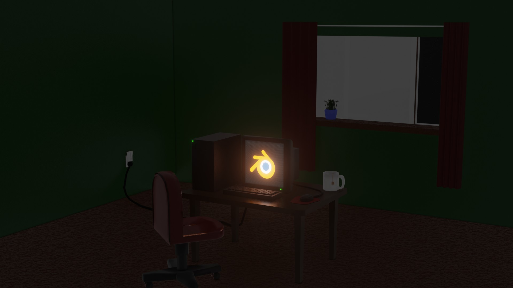

Preface
3D modeling may seem like a daunting task at first glance, but it can be surprisingly easy! All you need is a computer that can handle it, some time, and a willingness to learn. Today, we will be making a low-poly model of an old CRT computer monitor and I promise, it's easier than you think.
"But what is Low-Poly?" Low-poly is a shorthand term for "low polygon." All 3D objects are made of things called Polygons, They are a shape that the computer can use in it's graphics drivers to draw a picture on the screen. A good rule of thumb is to try and keep the number of sides each polygon has to 4. This helps to prevent artifact in your rendered object.
"Don't you need expensive software for that?" While this used to be the case, there is a free, open-source software that is now wildly popular called Blender. This software is an immensely powerful tool that is, in some instances, considered to be as powerful as the leading industry standard software. This is the software we are using today and if you'd like to follow along, then I encourage you to download it and try it out. If your computer isn't quite strong enough to use this software, then I hope that you will at least begin to glean how the 3D graphics and CGI that you see in your favorite video games and movies is made.
"How do I learn more about this?" There are countless tutorials available on Youtube and I highly reccomend you begin with the Doughnut Tutorial by Andrew Price aka the Blender Guru. As you learn more then you will begin to experiment naturally on your own and before long you will be off to the races, creating amazing content and engaging with the communities on Reddit, Youtube, and just about every other social media platform out there!
Without Further Ado, Let's get started!
To start, lets open up the software. There will be a menu pop up with some default templates. We are going to choose the General one, with the little cube next to it. When it opens the scene you will see 3 things: a cube, a light, and a camera. these make up the basis of every scene in blender. Before we do anything with that though, we are going to take a look at the whole window and identify some important points. Hover over each item in the table below the picture to see a description of each numbered item.
| 1. Mode Viewer | 2. Selector Mode | 3. Proportional editing toggle |
| 4. Viewport Mode Radio Buttons | 5. 3D Perspective controller/indicator | 6. Object Collection and Hierarchy |
| 7. Settings panel | 8. Viewport | 9. Material Settings |
Set up
Now that we are familiar with the basic layout, it's time to push buttons. First, we're going to change our render settings. To do this We need to go to the render settings tab and change it from 'Eevee' to 'Cycles'. If you don't have this option, that's ok. You can skip this step. The reason you don't is because your computer doesn't have hardware that can support this feature. At the end we will show how this should look in both render engines and it has no bearing on the modeling aspect of this tutorial.
With this done it's time to start making some changes! Click on the cube so that it is outlined in orange, scroll your mouse wheel to zoom in to a level you like, and then press 'Tab' on your keyboard. this will open up the editor view and allow us to start modifying the model.

Rough Editing
Now that we are in the editor viewport and out object is the star of the show, its time to start bringing it to shape. First we are going to look at how things are now. By default, we are in 'Vertex select'. A vertex is the joining point between shapes but for our purposes we want to manupulate the edges. From here we are going to pick up the pace as we work so we will be abridging some steps but we will do our best to explain as we go.
- Press '2' on the keyboard to change to edge select mode.
- Press 'Crtl + R' on the keyboard and hover the mouse over the edge in one axis and click. Don't scroll or it will divide multiple times. If you did that it's fine, just scroll the wheel back down until only one line appears. Then Right click to apply the split in it's default proportion, which is half.
- Now that we've got a more manageable segment, click anywhere off the model do deselect the edge and press '3' on the keyboard to change to face select.
- Next we are going to press and hold 'Alt' and click close to the top edge on the rear segment to select a band of faces around the model.
- We're almost ready to start moving things but theres one more thing we need to do. Off of the model in the viewport. Click and hold the scroll wheel and drag across the screen until you can see the lonely unselected face on the backside of the cube.
- Now you can release the scroll wheel and hold down shift and left click that unselected face and it'll add it to the selection.
- We now have all the first faces we want selected and now we can start to actually do something. Press 'E' to extrude the faces and you'll note that the selection now moves and adds new faces in between the old and the new. At this point press 'S' and it'll change the extrude method to scale. Now you should scale it down by moving the mouse. Once it's close to where you want it in size, left click the mouse to apply the change. don't double click anywhere else, or you'll deselect the faces and you'll have to re-select them in the same way you did earlier. Also, if you right click, it will undo the scaling that you did. Luckily, even though it may look the same as before, the new segment still exists and all you have to do is press 'S' again and redo the scaling.
- The faces should still be selected at this point, so now we need to move them. If you look at an old monitor, the back of it isn't directly behind the center of the monitor so we need to offset it down a little. Press 'G' on the keyboard to 'grab' the selection, and then press 'Z' to lock the selection to the Z-Axis, which is vertical. After that, drag the mouse down slowly until the selection is where you think it looks right at.
- There seems to be an issue with the proportions on our monitor, the screen is way too thick! let's fix it really quick. Press 2 to go back to edge seleck and use the 'Alt + click' method to select the higher inner edge all the way around. Now press 'G' twice. What this does is it grabs the edge, but locks it to move along it's perpendicular edges, like it's on rails. Slowly move the mouse towards the front of the monitor until the screen thickness looks about right to you.
- It's already starting to look like a monitor! use the scroll wheel click and hold to look around the model and think about what it still needs. I'm thinking that its still a little too angular. Lets fix that. Press '2' to go back to edge select, then use 'Alt + click' and then 'Alt + Shift + click' to select the 2 middle edges of the monitor.
Before we do anything else, the isometric view isn't the best view for this operation, go to the 3D perspective indicator in the top right corner and click on the filled in red 'X'. This will lock the view to the positive X axis, if the red circle is showing a '-X' instead of an 'X', just click that circle again and it'll flip the view.
Refinement
- You should still have those 2 loops selected, we're going to press 'Ctrl + B' to bevel those edges. By default it will only bevel it by one face, which is perfect for us since we want this to be a low-poly model. If you want to smooth the curve further, scroll up on the mouse wheel and it will add more subdivisions, but that means more polygons and your computer will have to work harder to render it at the end.
- Now we have the basic shape of the monitor worked out, it's time to add the most important part! The screen. Hold the mouse wheel like we did earlier to turn the monitor to the screen side, or, click on the left-hand green circle to snap it to a view of the 'Y' axis.
- Now go back to Face select by pressing '3' again and click on the face where the screen will be. Then, press 'I' on the keyboard to inset the face and move the mouse towards the center of the screen until it looks like you've added an inch or two and left click to set it.
- Next we're going to extrude again with 'E'. but this time, we don't need to press any more buttons. Move the mouse towards the back of the monitor slightly. to set the screen back into the body of the monitor and don't forget to left click to set it. Then we're going to press 'I' again, inset the face roughly half of the size and set it. Without clicking off the screen, press 'G' to grab the selection and then press 'Y' to lock the movement to the Y axis and move the mouse until the screen bulges out of the monitor slightly. Finally, with the same face still selected, press 'Ctrl + B' to bevel but this time, we're going to scroll up on the mouse wheel by 1 click to add an extra face and drag the mouse until it you have some good proportions.
- We could call the modeling portion of this project done at this stage but the devil is in the details, so we can't have a floating monitor, especially with as heavy as the old ones were. So let's add a foot using only the skills we've already been practicing. Move your view to look at the bottom of the monitor, and select the polygons on the bottom by clicking the first one and the 'Shift + clicking' the remaining ones.
- Next, Inset those faces with 'I' and it will do them all as a group. Extrude with 'E' down about an inch or so, and then we're going to do something new. Press 'S,Z,0' in that order. What this does is it takes the selected faces and makes them all flat vertically.
- Next were going to extrude that foot just a little more, and then we're going to select the narrow band that is made as a result with 'Alt + click' on the narrow edge of one of the visible faces. If it makes a band around the whole monitor, don't worry, just try again closer to the edge you want. Finally, we're going to extrude again and try and lign up the front corners of the foot with the corners of the monitor.
And that's it for modeling! Use the mouse and look around your snazzy model straight out of the 90's with pride. Next we're going to dive into the wonderful world of materials to make this thing really pop. If you followed along to the letter, this model only has 92 polygons, which is absolutely tiny compared to most modern models. For comparison the average, unadorned human model in a modern video game has around 20,000 polygons on average. That's a ton and that's on the light side by industry standards.
Making it look good
This section is going to fly by because all you really need to do is look at the reference images and make yours look the same. I'll explain some settings but with materials and textures you only really get the full effect if you play around with it on your own. If you go down the rabbit hole and don't like what you see, you can always just delete the material and start over so have fun with it. While we do this, I made a dummy image to add to the screen so it isn't blank.
- Ok, so first things first, we need to think of the materials in this monitor. The generic, mass produced ones were a charcoal grey color and because they were plastic, they had a sort of matte finish to them. So that's a good place to start. Hit tab again to exit edit mode and go back to object mode, then go up to the top right side and click the material preview button. Lets go over to the material settings tab and open it up.
- By default, the object has a basic material with several settings. We aren't going to change that or get into the advanced editing so we'll just play with this material. First things first is the color. In that tab, click on the color block next to where it says "Base Color". Don't click the yellow dot, but the color itself. Then change the color to a charcoal grey color or whatever color you'd like your monitor to be using the color wheel and the alpha slider on the right of the pop-up.
- Now that you have a color you'd like, lets play around with other settings, Roughness is going to be important, as that determines how shiny the model is going to be. The higher the value, the more the material will look matte. I set it to roughly 0.6 so that the material has some sheen, but not too much. Next is Sheen. This effects how reflective an object is an an acute angle or how well the light wraps around the corner of an object. I brought this up a bit since it is a smooth plastic even if it is matte but it's not crucial so It's up to you. Finally is the Transmission. This is how well it absorbs light or how well light penetrates it. Glass would have a transmission of 1 while a painted wall would have a transmission of 0 since it doesn't let any light into it. This I set up a little bit until I felt it looked ok but again, not a crucial setting. Feel free to toggle back and forth between the material and rendered view so you can see what your monitor will look like with the lighting and everything. 
- It's looking pretty good but there's just one problem. The screen is black plastic too! We'd best correct that or we won't get our TPS reports in on time. Go back to object view and hit tab to go back into edit mode. Keep your material tab open the whole time, it's important. Once you have that done, select all of the polygons on the screen of the monitor object. To do this quickly, you can lock the view to the '-Y' axis and, since we have the box selector active, you can drag a box with left click over your selection to do it quickly.
- With those Polygons selected, in the material settings tool, at the top right of that panel, hit the little plus symbol to add another material slot to this object and then add a new material and hit assign. This tells the model that only the screen gets to use that material. With that done, you can hit 'Tab' again to go back to object mode, then go to rendered view to see that you now have a white screen.
- You can play with the color and settings here to your hearts content but I have one consideration for you, those screens are glass. meaning that they are shiny. I would set the roughness all the way down to 0, specular and sheen all the way to 1, and then if you have a screen color you like, you can play around with the emission property all the way at the bottom. While the emission color is black, however, it will not seem to put off any light. I would change the emission to a dark blue or a different shade of your base color and then play with the Emission Strength property until you have a result that you like.
- If you want to add a little bit of extra detail, in the material panel, click the yellow dot next to Base color, in the pop up under texture, find wave texture and choose wave texture. Change the 'X' in the new setting to 'Z' and crank the scale up to around 36. This gives it an old monitor static look.
- The last step is to play around with it! the best way to learn is to learn by doing so have fun and share your results online!
Finishing up
Now that you've got an awesome model made, hit 'F12' on your keyboard to render the image to see it in all it's glory. Maybe make a desk and a coffee cup to put next to it. The internet is your oyster! I hope this tutorial has piqued your interest and you carry on with 3D modeling because it can be a blast and it's fun to play around with.
.  